In this project we will be motivating and implementing diffusion models for the purposes of denoising and
conditional image generation.
Part 0: Setup
In this beginning portion of the project we will be using the DeepFloyd IF diffusion
model. This model, trained by Stability AI, is a two part model whose first part produces images of
64px x 64px and the second which upsamples to 256px x 256px. For sake of
simplicity and compute constraints, all figures presented below will be rendered at the lower
64px x 64px resolution.
Note that DeepFloyd is a text-to-image model, and that the following images are generated with the text
constraint, "a high quality photo". The below generations give us some insight into how this model works,
and specifically how the number of inference steps affects the outputs. Further note that these were
generated with
seed = 180.
Notice that—generally speaking—the images generated with 100 inference steps are more photo-realistic and
clearer than those generated with only 20. Take for example the images of the "man in the hat," which is far
clearer in the version with 100 inference steps. Similar logic can be applied to the "oil painting of a
snowy mountain village."
"an oil painting of a snowy mountain village"
"a man wearing a hat"
"a rocket ship"
num_inference_steps=20
num_inference_steps=100
Part 1: Sampling Loops
Part 1.1: Forward Process
To fully understand the utility of diffusion models, it is important to understand the crux of how diffusion
models work. We start with an image, say \(x_0\), and we recursively add gaussian noise to it to get noisier
and noisier images. We can express this as the following recurrence relation.
We do this for some finite number of timesteps \(T\), where we now have \(x_0\) as the original, clean image
and \(x_T\) as the noisiest image. Notice that for the DeepFloyd models, \(T = 1000\), and that the exact
amount of noise added at each timestep is determined by noise coefficients, \({\alpha}_t\).
Notice that using the recursive defintion, we get the following.
Using this formula, we can compute various noisy versions of the campanile as shown below.
t = 0
t = 250
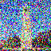
t = 500
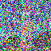
t = 750
Part 1.2: Classical Denoising
Before turning to diffusion models for denoising, we will try and use our trusted gaussian blur filtering.
Depicted below are the three noisy images from above with a gaussian blur for denoising. Notice that this
doesn't really work at all, as it doesn't recover any of the orignal structure, only further blurs the
already distorted image.
t = 0
t = 250
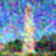
t = 500
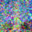
t = 750
Part 1.3: One-Step Denoising
We we will now use a pretrained denoising network to try and denoise these images. Notice that the model will
output an estimate of the noise, which we will then have to scale appropriately before subtracting from the
image. Recall that we can simply rearrange the earlier equation to get the following.
Using this formula, we get the following contrast between the original image in the top row, noisy image in
the middle, and denoised image in the bottom row. Notice that though it's not perfect, it works far better
than the gaussian blur from earlier.
Original
Noisy
One-Step Denoised
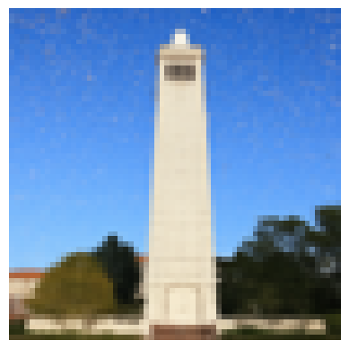
t = 250
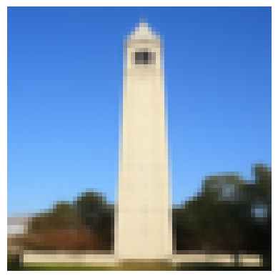
t = 500
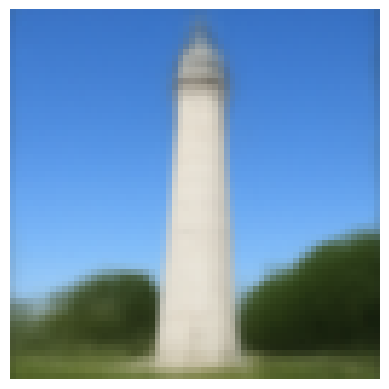
t = 750
Part 1.4: Iterative Denoising
Though this one-step denoising performed far better than the gaussian blur from earlier, we can still do much
better. Consider that if instead of removing all of the predicted noise at once, we removed a smaller
portion of this noise and then reconsidered what noise was left with the new image we had. If we performed
this operation recursively, intuitively it would produce a clearer image. However, there is a tradeoff
between compute and clarity. As you may recall, the DeepFloyd models were trained with \(T=1000\), which is
a large number of steps to denoise one-by-one. As such, we will take the middle ground and instead estimate
the noise in certain fixed-length intervals. In the case of this project, we will be using 30 timesteps as
our stride length.
The following formula allows us to estimate \(n\) timesteps of noise with the following generalizations.
Using this formulation, we get the following sequence of denoised images.
Noisy Image
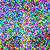
Step 10
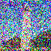
Step 15
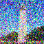
Step 20
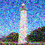
Step 25
Step 30
We can compare the results of this procedure to our other attempts.
Original
Iteratively Denoised
Gaussian Blur
One-Step Denoised
Notice that we have once again improved dramatically, and that the iteratively denoised image is far clearer
than the one-step denoised version.
Part 1.5: Diffusion Model Sampling
We will begin our further exploration into diffusion models by sampling a few images from them with the text
prompt, a high quality image. The results are shown below.
Sample 0
Sample 1
Sample 2
Sample 3
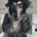
Sample 4
Though these results aren't terrible, they are definitely not very photo-realistic either. We will see that
we can do better.
Part 1.6: Classifier Free Guidance
We will now implement something known as classifier free guidance. This can be thought of as a method of
pushing the model to predict noise more extremely conditioned on our text prompt. The formula for the new
noise estimate is as below, where \(\epsilon_c\) is the conditional noise estimate and \(\epsilon_u\) is the
unconditional noise estimate. In Classifier Free Guidance (CFG), \(\lambda > 1\).
We can understand this equation by thinking of the difference between the two estimates to be the vector
direction representing the essence of the prompt. As such, we push the noise further in this direction by
increasing \(\lambda\).
The below images were generated with GFG, and they are noticeably more visually consistent and clearer than
those we generated earlier.
Sample 0
Sample 1
Sample 2
Sample 3
Sample 4
Part 1.7: Image to Image Translation
With what we have developed so far, we can implement a new way of "editing" images. Namely, we can add some
noise to an image and then denoise it to edit it. We do this with a few images and the results are depicted
below. Note that the value of i_startindexes into the array strided_timesteps[]
where lower indices represent more noisy timesteps and higher indices represent less noisy timesteps. As
such, the higher the value of i_start, the less noisy the image.
i_start = 1
i_start = 3
i_start = 5
i_start = 7
i_start = 10
i_start = 20
Original
Part 1.7.1: Editing Hand Drawing and Animated Images
We continue the same proceduce of adding noise and denoising to "edit" but now on animated and hand drawn
images.
i_start=1
i_start=3
i_start=5
i_start=7
i_start=10
i_start=20
Original
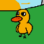
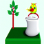
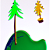
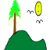
Part 1.7.2: Inpainting
We now consider a more selective version of editing known as inpainting. In this version, we use a mask to
convey to the model which regions of the image we would like to edit. More specifically, regions that the
mask does not want edited are reverted to match the original image after each denoising step.
Resulting of inpainting various different images are shown below.
Original
Mask
Inpainted
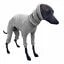
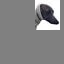
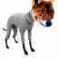
Part 1.7.3: Text-Conditional Image-to-image Translation
Recall that the DeepFloyd models are text conditioned. As such, we use text prompts to "guide" SDEdit in a
certain way and inspire its changes. The results of this for the prompt, "a rocket ship" are
shown below.
i_start = 1
i_start = 3
i_start = 5
i_start = 7
i_start = 10
i_start = 20
Original
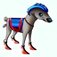
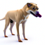
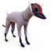
Part 1.8: Visual Anagrams
We can do other interesting things with diffusion models such as creating images that are two different
things right side up and upside down. These are known as visual anagrams. The procedure for generating these
images with a diffusion model is relatively straightforward. The essence of the procedure is that the used
noise estimate is the average of two separate estimates. One of these estimates is the normal noise estimate
conditioned on a certain text prompt p1. The other noise estimate is conditioned on a flipped
version of the image and the second text prompt. As such, the image is pushed into a region of the image
manifold that represents two different structures in different orientations. The explicit formulas are given
below.
A few of my generated visual anagrams are depicted below.
an oil painting of people around a campfire
an oil painting of an old man
a photo of a dog
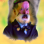
a photo of a man
a lithograph of a skull
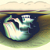
a lithograph of waterfalls
Part 1.9: Hybrid Images
We can do something similar to generate hybrid images. In this version, we again get two separate noise
estimates conditioned on different text prompt. This time, however, instead of directly averaging we take a
lowpass of one and a highpass of the other before combining. The explicit representations of this process
are given below.
A few of my generated hybrid images are shown below.
Harry Potter
Albert Einstein
Pizza
Water Wheel
Waterfalls
Skull
Part 2: Diffusion Models from Scratch
Part 2.1: Training a Single-Step Denoising UNet
In this part of the project, we train a denoising UNet from scratch on the MNIST digits dataset. This
denoiser will map a noisy version of an MNIST digit to a clear, denoised version. To train this network, we
first need to obtain sufficiently noisy data points. A sample of these noised images are shown below.
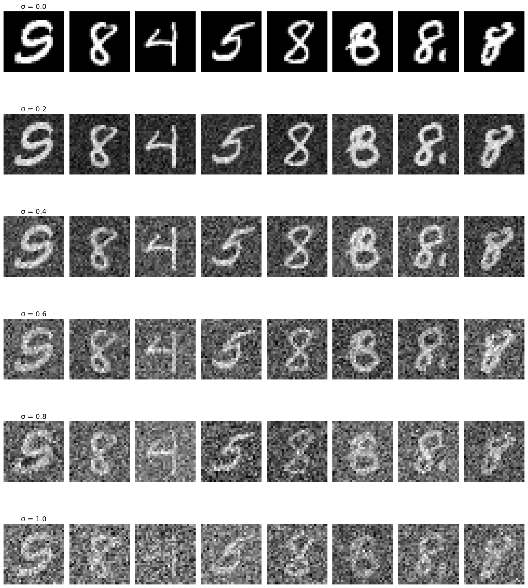
We use these noised images, specifically thoise with \(\sigma = 0.5\) to train the model, obtaining the
following log loss curve.
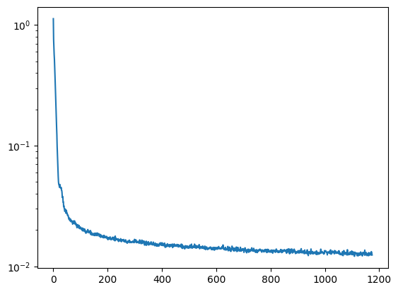
We can watch the evolution of training by visualizing the denoising process after epochs 1 and 5
respectively.
Though they may look similar, the denoised results on the top have small, light wisps and dots near their
edges. They can be seen clearly inside the 4 and on top of the 9. These small artifacts are gone after epoch
5.
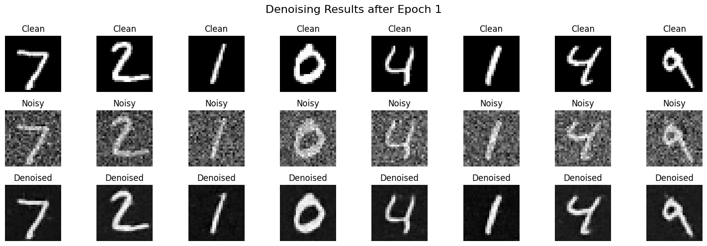
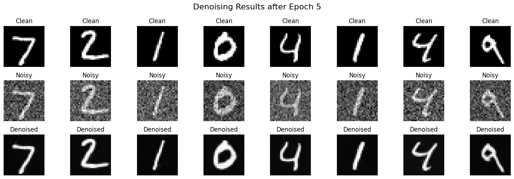
Though we only trained with \(\sigma = 0.5\), we test on other sigmas to see how well our model generalizes.
Notice that it still seems to pretty well up to and not including \(\sigma = 0.8\). The sigma values in the
table below represent the amount of noise added to the image before being denoised. The plotted image is the
image after denoising.
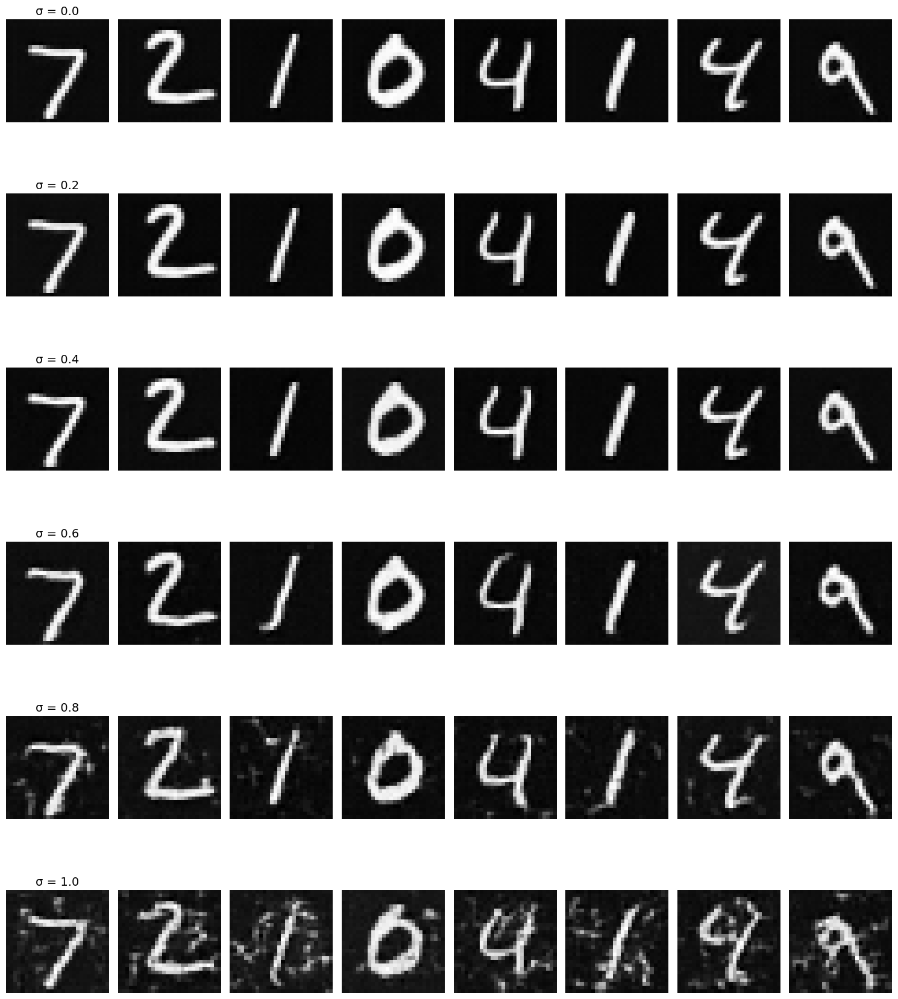
Part 2.2: Time Conditioned and Class Conditioned UNets
Part 2.2.1: Time Conditioned UNet
We will now architecturally modify our original UNet by allowing it to condition its predictions on the given
time step and the given class of digit. This will allwow us to more finely control generation and obtain
better denoising results.
We train with these new additions to get the following log loss curve.
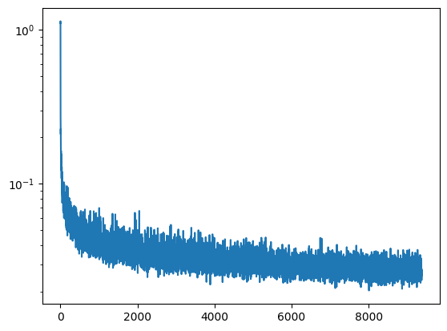
After the time conditioned model is trained, we can use it for generation by conditioning on the time step t
and slowly denoising to produce an image. The preliminary results of this after training for 5 epochs are
shown below.
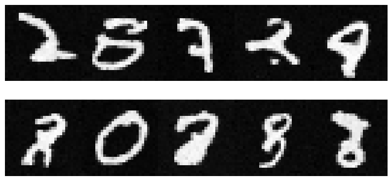
Training for another 15 epochs, we get the below generations after 20 epochs of training. Notice that though
the images are clearer and less blurry after 20 epochs, they are still not visuall consistent.
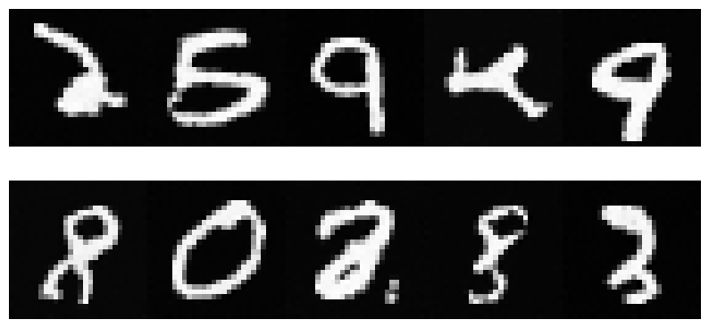
Part 2.2.2: Class Conditioned UNet
To allow for better generation and to give use more control, we condition our generation on the class of the
image. In the case of the MNIST dataset there are 10 classes (10 digits, 0-9). Furthermore, we implement CFG
to give us more realistic generations. Training with these modifications gives the following log loss curve.
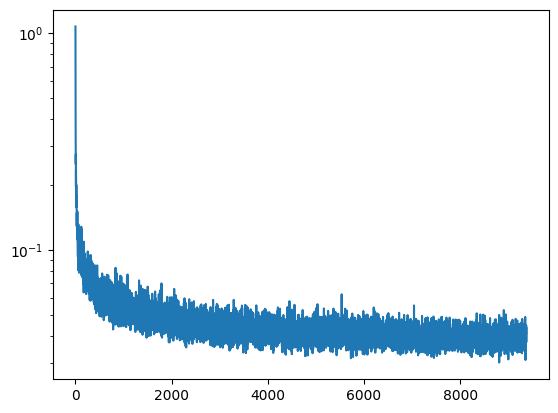
Again, we look at how realistic the generations look throughout training. The following figure shows
generations after 5 epochs of training.
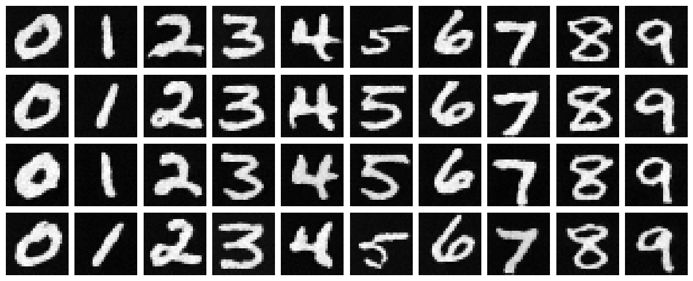
Notice that the above generations after only 5 epochs are decent due to CFG, but the strokes are still a bit
too blurry and thick. The figure below, depicting the images after 20 epochs have much thinner, more precise
strokes while maintaining the detail present in natural human writing.